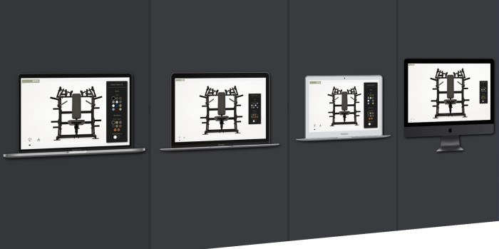

The brief
A luxury brand's configurator has a different job than an e-commerce widget. SPX sells environments where the equipment is part of the interior design, so when a client configures a chest press, the steel finish and the upholstery stitching aren't SKU options, they're the product. The tool had to render at the fidelity the brand's clientele expects (real-time customization at 4K/8K), stay responsive while a sales conversation is happening around it, and live on the open web as part of SPX's own site, not in a native app someone has to install. Configure the frame, configure the upholstery, view it from any angle, save the configuration. One week to commercial delivery.
What makes browser 3D hard is the second minute
Getting a 3D model spinning in a browser is a weekend project. Keeping it responsive at luxury-brand fidelity, on hardware you don't control, while a user drags the camera and swaps materials mid-frame. That is the actual work, and it is a budget problem: at 60fps you get about 16 milliseconds per frame, and high-resolution material swaps want far more than that.
Two disciplines carried the performance. Lazy loading shaped the load story: the configurator ships the minimum first, just the base model and default finishes, then streams higher-resolution textures and alternate material sets behind the interaction, so first paint is fast and detail arrives before the user asks for it. Nobody configures every option in the first second; the asset pipeline exploits that. Interaction-loop tuning shaped the feel: expensive work is scheduled around the user's gestures rather than in them. While the camera is moving, the loop renders; texture uploads and material compilation land in the frames between gestures. The heuristic that mattered: never spend a frame's budget on something the user didn't just do. Responsiveness under concurrent load isn't one optimization; it's a policy about who owns the frame.
The interaction-loop policy, distilled
const deferred: Array<() => void> = [] // texture uploads, material compiles
function frame(now: number) {
controls.update(now)
renderer.render(scene, camera) // the gesture always gets the frame
// Spend leftover budget on deferred work; only while the camera is idle,
// and never more than fits before the next frame is due.
if (!controls.isInteracting()) {
const budget = FRAME_MS - (performance.now() - now)
while (deferred.length && performance.now() - now < budget * 0.8) {
deferred.shift()!() // e.g. upload one 4K mip level
}
}
requestAnimationFrame(frame)
}
function onFinishSelect(finish: Finish) {
applyLowResPreview(finish) // instant feedback at proxy resolution
enqueueMips(finish, deferred) // full 4K/8K arrives between gestures
}The user sees a finish change instantly at proxy resolution, and the full-resolution version resolves in the gaps between their gestures. That is why the tool feels photoreal and immediate, instead of making them choose.
Fidelity sells the product; latency sells the fidelity. A photorealistic render that stutters while the client drags it reads as broken, and "broken" is the one thing a luxury brand cannot ship.
The week was fast because the framework was slow
The honest answer to "how do you ship this in a week?" is: you don't. You ship it in a week plus the months of framework work that preceded it. AetherisVis had been building a modular React + TypeScript visualization framework: 35+ reusable components covering the recurring anatomy of every configurator: scene management, camera controls, material and finish selectors, variant preview panes, save/share state. Measured across client projects, it cut UI prototyping time by 60%.
That's what made the SPX build an assembly problem instead of an invention problem. The week went into what was genuinely specific to the client: the equipment models and their material systems, the finish and upholstery options that matched SPX's actual product line, the brand-fidelity pass, and the performance tuning above. The parts every configurator shares were already built, already typed, already debugged on someone else's deadline. Component reuse is usually pitched as a code-quality virtue; under a one-week commercial deadline it's the difference between shipping and apologizing.
Commercial delivery is a different sport
This wasn't a demo. It shipped as a commercial client product, embedded in the client's sales motion. That changes the definition of done. Done means the client's team can use it in front of their customers without an engineer in the room: configurations save and reload, the tool degrades gracefully on a hotel-lobby iPad, and the visual language matches the brand it lives inside. As CTO, the calls I made that week were mostly about protecting that bar: cutting configurable options that couldn't hit the fidelity target in time rather than shipping them at half-quality, because in luxury retail an absent option is forgivable and an ugly one is not.
Learnings
Deadlines are an architecture review. A one-week commercial build is a brutal audit of every abstraction you own: whatever isn't genuinely reusable reveals itself immediately. The 35+ components that survived contact with the SPX build became the framework's trusted core; the ones that needed rework taught us more than any design review had.
Performance is a product feature with a brand attached. The same frame-rate discipline reads differently for different clients; for SPX it was luxury-grade polish. It taught me to write performance targets in the client's vocabulary ("never stutters during a sales demo") rather than the engine's ("16ms frame budget"), then translate. The engineering is identical; the accountability is legible.
Speed and quality trade off against scope, not against each other. The week never compromised rendering fidelity or interaction feel. It compromised the number of things configurable at launch. That's the through-line from this project to everything since: hold the load-bearing properties fixed, and negotiate everything else. It's the same shape as VortexeAI's execution contract and SCM's security invariants, decided here under the shortest deadline of the three.